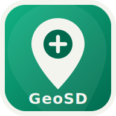
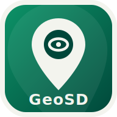

DR Centre-Val de Loire — Services départementaux
GeoSD centralise les observations, événements et informations territoriales remarquables — chasse, pêche, pollution de l'eau, phytosanitaires et plus — sur fond OpenStreetMap et IGN. Sans compte utilisateur, sans serveur applicatif : les données restent sur votre poste ou votre réseau.
Chasse, pêche, eau, phytosanitaires, VTM, FSC, habitat/espèces protégées, cueillette — champs et sous-types configurables depuis un simple fichier CSV.
Saisie hors-ligne, sauvegarde automatique locale sur l'appareil, export groupé en fin de tournée à transmettre au bureau.
OpenStreetMap, Plan IGN et Orthophoto IGN, interchangeables en un clic.
Par thématique, période, fiabilité, ou recherche libre sur tous les champs saisis.
Vue tableau exportable en CSV, histogramme mensuel par thématique — pour le suivi et le reporting.
Format GeoJSON standard, ouvert dans QGIS. Tout reste sur votre poste ou votre réseau d'entreprise.

TERRAINSaisie de nouveaux points en mobilité. Sauvegarde automatique sur l'appareil, export groupé en fin de tournée pour transmettre au bureau.
Tout navigateur récent — mobile ou tablette
Ouvrir la saisie terrain →
CONSULT.Lecture seule des points déjà connus, pour situer une intervention sans risque de modification accidentelle.
Tout navigateur récent — mobile ou tablette
Ouvrir la consultation →Ouvrir la version Saisie terrain, cliquer sur la carte pour créer un point, choisir la thématique et remplir le formulaire. Chaque point est sauvegardé automatiquement sur l'appareil — rien n'est perdu même sans réseau.
« Exporter tout » télécharge un fichier regroupant tous les points saisis sur l'appareil, à transmettre au bureau par le moyen de son choix (mail, clé USB, dossier partagé).
C'est l'administrateur qui intègre ces envois dans le fichier central et le tient à jour sur le dossier réseau. Il vous appartient de recopier périodiquement ce fichier à jour sur votre appareil de consultation (bouton « Charger un fichier ») — un repère d'âge s'affiche, avec une alerte au-delà de 30 jours pour savoir quand redemander une copie fraîche.
Un jeu de données d'exemple, points2.geojson, est disponible pour tester la version Consultation (bouton « Charger un fichier ») ou pour afficher un contexte visuel en Saisie terrain (bouton « Charger points existants »), sans avoir encore de fichier réel.
Vos propres relevés resteront ensuite en local — ce fichier de démonstration ne sert qu'à la découverte de l'outil.